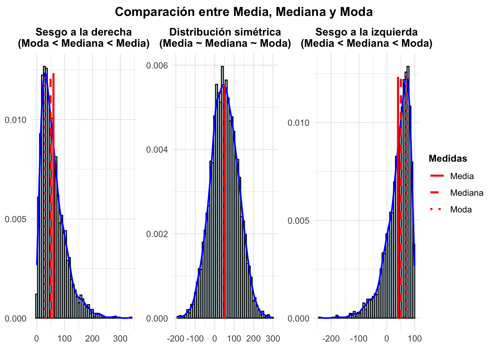
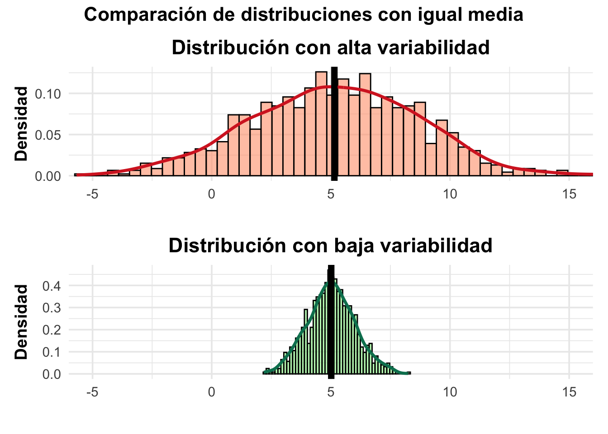
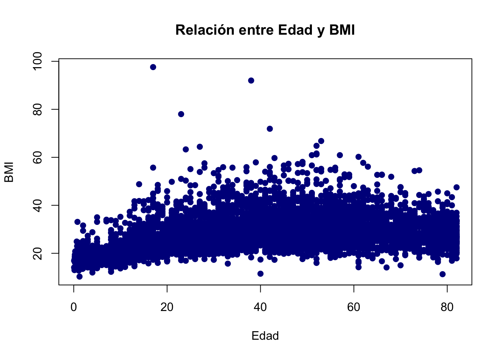
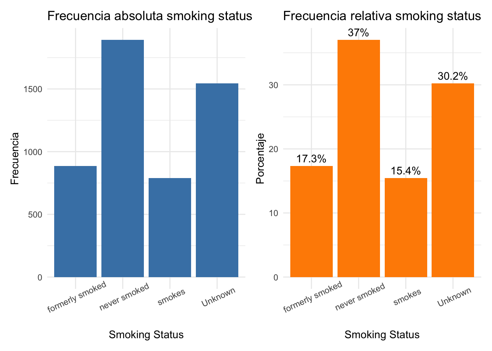
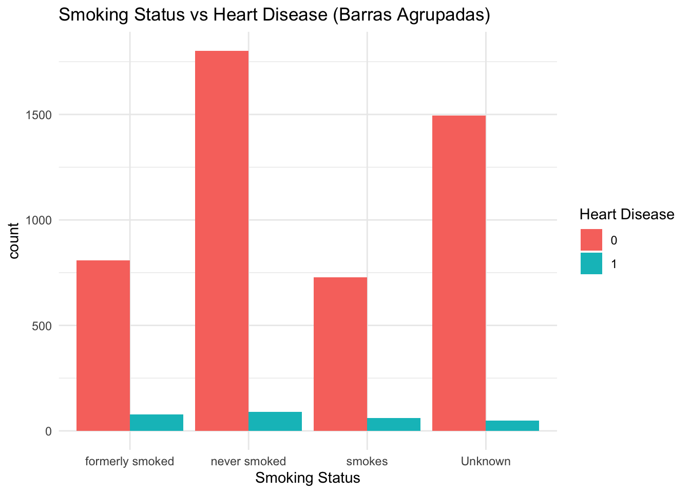
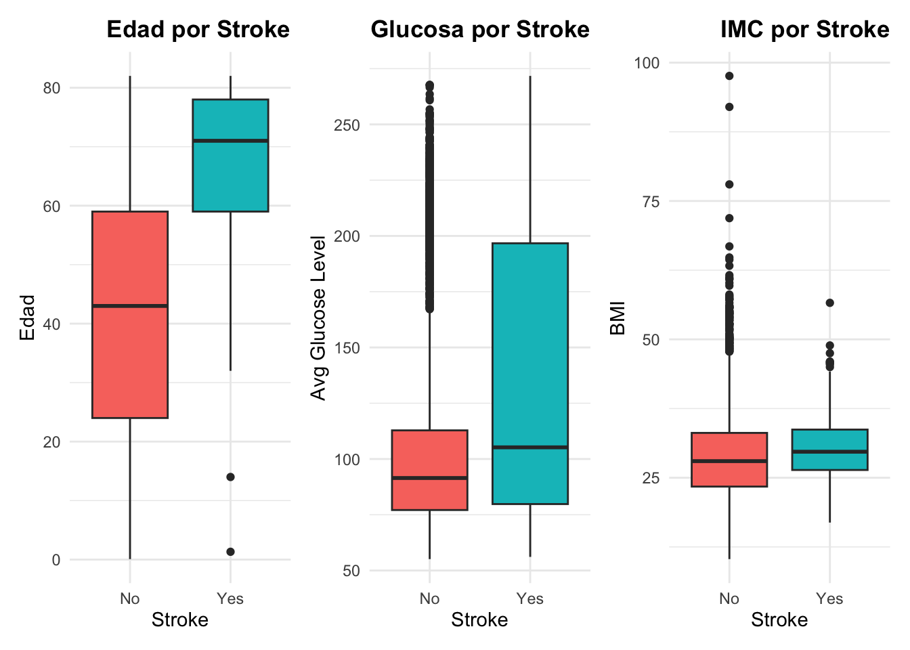
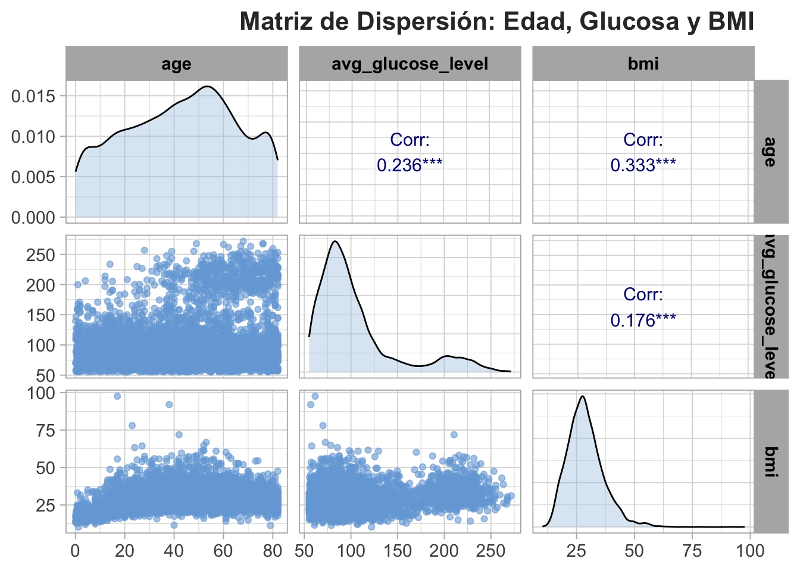

| Variable | Tipo.de.Variable | Escala.de.Medición |
|---|---|---|
| gender | Categórica | Nominal |
| age | Cuantitativa | Ratio |
| hypertension | Categórica | Ordinal |
| heart_disease | Categórica | Nominal |
| ever_married | Categórica | Nominal |
| work_type | Categórica | Nominal |
| Residence_type | Categórica | Nominal |
| avg_glucose_level | Cuantitativa | Ratio |
| bmi | Cuantitativa | Ratio |
| smoking_status | Categórica | Nominal |
| stroke | Categórica | Nominal |
4 Estadística Descriptiva
5 Introducción
La estadística descriptiva constituye el primer paso esencial en el análisis de datos, ya que permite organizar, resumir y visualizar la información de manera clara y comprensible. A través de ella, es posible identificar patrones, detectar anomalías y formular hipótesis preliminares antes de aplicar métodos más complejos de inferencia o modelado predictivo.
Como señalan Spriestersbach y colaboradores (2009), la presentación adecuada de los datos no solo facilita su comprensión, sino que también revela si fueron recolectados y analizados de forma rigurosa. Esta etapa cobra especial relevancia en el contexto de investigaciones biomédicas, donde cada observación —ya sea un paciente, una célula o un evento clínico— representa una unidad estadística con múltiples variables asociadas, tanto cuantitativas como cualitativas.
Este libro propone una aproximación aplicada y visual al estudio de la estadística descriptiva, utilizando un conjunto de datos reales relacionados con la predicción de accidentes cerebrovasculares (ACV). A través de herramientas como R, aplicaciones Shiny y visualizaciones dinámicas, el lector podrá explorar variables categóricas y numéricas, interpretar sus distribuciones, y comprender cómo la escala de medición influye en la selección de representaciones gráficas y resúmenes numéricos.
Además de gráficos clásicos como histogramas, diagramas de caja y gráficos de barras, se incluirán recursos interactivos, ejemplos reproducibles y videos tutoriales que fortalecen el aprendizaje autónomo. Este enfoque busca no solo enseñar técnicas estadísticas, sino también fomentar una comprensión crítica del análisis de datos en escenarios reales.
Al finalizar este recorrido, el lector habrá adquirido competencias fundamentales para describir datos con claridad, detectar relaciones entre variables y establecer las bases sólidas para futuros análisis inferenciales. Como base de todo estudio científico riguroso, la estadística descriptiva es mucho más que una etapa inicial: es una herramienta poderosa para ver con claridad aquello que los datos tienen por decirnos.
6 Contexto del Estudios
Este capítulo explora un conjunto de datos reales proveniente del Stroke Prediction Dataset, disponible también en Github. El dataset contiene información demográfica, médica y de comportamiento de pacientes, con el objetivo de predecir la ocurrencia de accidentes cerebrovasculares (ACV).
Utilizaremos herramientas de estadística descriptiva para explorar y resumir los datos, apoyándonos en visualizaciones gráficas, código en R, aplicaciones Shiny y recursos audiovisuales complementarios.
7 Clasificación y Tipos de Variables
En la siguiente tabla se presenta una descripción de las variables del conjunto de datos, clasificadas según su tipo (categórica o cuantitativa) y su escala de medición. Es importante esta clasificación para elegir representaciones gráficas adecuadas.
7.1 Carga y descripción del conjunto de datos
Ver código
datos <- read.csv("healthcare-dataset-stroke-data.csv")
head(datos) id gender age hypertension heart_disease ever_married work_type
1 9046 Male 67 0 1 Yes Private
2 51676 Female 61 0 0 Yes Self-employed
3 31112 Male 80 0 1 Yes Private
4 60182 Female 49 0 0 Yes Private
5 1665 Female 79 1 0 Yes Self-employed
6 56669 Male 81 0 0 Yes Private
Residence_type avg_glucose_level bmi smoking_status stroke
1 Urban 228.69 36.6 formerly smoked 1
2 Rural 202.21 N/A never smoked 1
3 Rural 105.92 32.5 never smoked 1
4 Urban 171.23 34.4 smokes 1
5 Rural 174.12 24 never smoked 1
6 Urban 186.21 29 formerly smoked 17.2 Gráficos descriptivos (Variables Cuantitativa)
Las variables cuantitativas del conjunto de datos —aquellas de naturaleza numérica, ya sean continuas o discretas, que permiten realizar operaciones aritméticas y análisis estadísticos— son: age (edad), avg_glucose_level (nivel promedio de glucosa en sangre) y bmi (índice de masa corporal).
Es importante destacar que la variable bmi contiene valores faltantes codificados como “N/A” en formato de texto, lo cual impide que R la reconozca automáticamente como variable numérica. Esta situación puede afectar el cálculo de estadísticas resumen y la generación de gráficos como histogramas y boxplots.
Para resolverlo, es necesario reemplazar los valores “N/A” por NA (la forma correcta de representar datos faltantes en R) y luego convertir la columna a tipo numérico. A continuación se muestra el código utilizado para esta limpieza, seguido de los primeros 20 valores de la variable bmi como ejemplo ilustrativo:
Ver código
datos$bmi[datos$bmi == "N/A"] <- NA # Reemplazar "N/A" por NA en la variable bmi.
datos$bmi <- as.numeric(datos$bmi) # Convertir la variable bmi a numérica.
datos$bmi[1:20] # Los primeros 20 datos de la variable bmi. [1] 36.6 NA 32.5 34.4 24.0 29.0 27.4 22.8 NA 24.2 29.7 36.8 27.3 NA 28.2
[16] 30.9 37.5 25.8 37.8 NAA continuación, se presenta un panel comparativo que resume gráficamente la distribución de tres variables numéricas clave del conjunto de datos: edad, nivel promedio de glucosa en sangre e índice de masa corporal (IMC). Para cada variable se incluyen tres tipos de gráficos:
Un histograma para visualizar la frecuencia de los valores.
Un boxplot para identificar la mediana, rango intercuartílico y posibles valores atípicos.
Una curva de densidad para observar la forma suavizada de la distribución.
Estos gráficos se organizan en una matriz de 3 filas y 3 columnas, permitiendo una comparación visual clara y simultánea entre las variables, facilitando la identificación de patrones como asimetrías, concentraciones y valores extremos.
Ver código
# Instalar patchwork si no lo tienes
# install.packages("patchwork")
library(ggplot2)
library(patchwork)
# Gráficos para 'age'
p1 <- ggplot(datos, aes(x = age)) +
geom_histogram(bins = 30, fill = "#69b3a2", color = "white") +
labs(title = "Histograma de Edad", x = NULL, y = "Frecuencia") +
theme_minimal()
p2 <- ggplot(datos, aes(y = age)) +
geom_boxplot(fill = "#FF9999") +
labs(title = "Boxplot de Edad", x = NULL, y = NULL) +
theme_minimal()
p3 <- ggplot(datos, aes(x = age)) +
geom_density(fill = "#404080", alpha = 0.4) +
labs(title = "Densidad de Edad", x = NULL, y = "Densidad") +
theme_minimal()
# Gráficos para 'avg_glucose_level'
p4 <- ggplot(datos, aes(x = avg_glucose_level)) +
geom_histogram(bins = 30, fill = "#69b3a2", color = "white") +
labs(title = "Histograma de Glucosa", x = NULL, y = "Frecuencia") +
theme_minimal()
p5 <- ggplot(datos, aes(y = avg_glucose_level)) +
geom_boxplot(fill = "#FF9999") +
labs(title = "Boxplot de Glucosa", x = NULL, y = NULL) +
theme_minimal()
p6 <- ggplot(datos, aes(x = avg_glucose_level)) +
geom_density(fill = "#404080", alpha = 0.4) +
labs(title = "Densidad de Glucosa", x = NULL, y = "Densidad") +
theme_minimal()
# Gráficos para 'bmi'
p7 <- ggplot(datos, aes(x = bmi)) +
geom_histogram(bins = 30, fill = "#69b3a2", color = "white") +
labs(title = "Histograma de IMC", x = "IMC", y = "Frecuencia") +
theme_minimal()
p8 <- ggplot(datos, aes(y = bmi)) +
geom_boxplot(fill = "#FF9999") +
labs(title = "Boxplot de IMC", x = "IMC", y = NULL) +
theme_minimal()
p9 <- ggplot(datos, aes(x = bmi)) +
geom_density(fill = "#404080", alpha = 0.4, na.rm = TRUE) +
labs(title = "Densidad de IMC", x = "IMC", y = "Densidad") +
theme_minimal()
# Unir todos los gráficos en una sola figura: 3 columnas x 3 filas
panel_final <- (p1 | p4 | p7) /
(p2 | p5 | p8) /
(p3 | p6 | p9) +
plot_annotation(title = "Distribuciones para Variables Cuantitativas",
theme = theme(plot.title = element_text(hjust = 0.5, face = "bold")))
# Mostrar el panel completo
panel_final
La figura anterior presenta un resumen visual de tres variables cuantitativas clave del conjunto de datos: edad, nivel promedio de glucosa en sangre e índice de masa corporal (IMC). Para cada variable se muestran tres representaciones gráficas: un histograma (distribución de frecuencias), un diagrama de caja (boxplot) y una curva de densidad (estimación suavizada de la distribución).
üîπ Edad
El histograma de edad revela una distribución aproximadamente uniforme entre los 20 y 80 años, aunque con una ligera acumulación en adultos mayores.
El boxplot indica una mediana cercana a los 50 años, sin valores extremos evidentes.
La curva de densidad refuerza la percepción de una distribución dispersa, sin fuerte sesgo.
üîπ Nivel de glucosa promedio
El histograma muestra una clara asimetría positiva (sesgo a la derecha), con muchos pacientes en el rango de 80–150 mg/dL y pocos con niveles superiores a 200.
El boxplot confirma esta asimetría al mostrar varios outliers por encima del tercer cuartil.
La densidad sugiere una distribución no normal, lo cual podría requerir transformación si se usa en modelos paramétricos.
üîπ IMC (√çndice de masa corporal)
El histograma de IMC muestra una distribución centrada en valores entre 25 y 35, compatibles con sobrepeso y obesidad.
El boxplot evidencia muchos valores atípicos hacia arriba, aunque la mediana está alrededor de 28.
La curva de densidad presenta una forma unimodal con cola derecha, también indicando asimetría.
Este tipo de visualización conjunta permite al lector comparar la forma, dispersión y simetría de las variables numéricas más relevantes del estudio. También sirve como base para tomar decisiones estadísticas posteriores, como transformaciones, imputación de valores extremos o segmentación de la muestra por rangos clínicos.
7.3 Comparación de variables cuantitativas según la ocurrencia de ACV (stroke)
Una parte esencial del análisis descriptivo es explorar cómo se comportan las variables cuantitativas en función de una variable categórica relevante. En este caso, se analizan tres indicadores clínicos —edad, nivel promedio de glucosa en sangre (avg_glucose_level) y índice de masa corporal (bmi)— comparando su distribución entre pacientes que han sufrido un accidente cerebrovascular (ACV o stroke) y aquellos que no lo han sufrido.
Los datos se visualizan mediante diagramas de caja (boxplots), que permiten identificar diferencias en la mediana, dispersión y presencia de valores atípicos entre los dos grupos. Estos gráficos se organizan en una matriz de 1 fila por 3 columnas, lo que permite una comparación visual clara y simultánea entre las tres variables. Esta disposición facilita la detección de patrones relevantes, como asimetrías, concentraciones de valores o extremos, que podrían estar asociados con el riesgo de sufrir un ACV.
Ver código
library(ggplot2)
library(patchwork)
library(readr)
library(dplyr)
# Asegurar que stroke sea factor (para que ggplot lo interprete como categoría)
datos$stroke <- factor(datos$stroke, levels = c(0, 1), labels = c("No", "Yes"))
# Crear los boxplots individuales con títulos alineados a la derecha
p1 <- ggplot(datos, aes(x = stroke, y = age, fill = stroke)) +
geom_boxplot() +
labs(title = "Edad por Stroke", x = "Stroke", y = "Edad") +
theme_minimal() +
theme(
legend.position = "none",
plot.title = element_text(hjust = 1, face = "bold") # Alineación derecha
)
p2 <- ggplot(datos, aes(x = stroke, y = avg_glucose_level, fill = stroke)) +
geom_boxplot() +
labs(title = "Glucosa por Stroke", x = "Stroke", y = "Avg Glucose Level") +
theme_minimal() +
theme(
legend.position = "none",
plot.title = element_text(hjust = 1, face = "bold")
)
p3 <- ggplot(datos, aes(x = stroke, y = bmi, fill = stroke)) +
geom_boxplot() +
labs(title = "IMC por Stroke", x = "Stroke", y = "BMI") +
theme_minimal() +
theme(
legend.position = "none",
plot.title = element_text(hjust = 1, face = "bold")
)
# Panel con los tres gráficos
panel <- p1 | p2 | p3
panel
El gráfico anterior muestra cómo varían tres variables cuantitativas clave —edad, nivel promedio de glucosa en sangre y índice de masa corporal (IMC)— entre pacientes que no han sufrido un accidente cerebrovascular (ACV) (grupo “No”) y aquellos que sí lo han sufrido (grupo “Yes”).
Edad: Se observa una diferencia clara entre los grupos. Los pacientes con ACV tienden a ser considerablemente mayores, con una mediana por encima de los 70 años, mientras que los que no han tenido ACV presentan una mediana cercana a los 40 años. Esto sugiere una fuerte asociación entre la edad avanzada y la ocurrencia de ACV.
Nivel de glucosa: Aunque existe una mayor dispersión entre los pacientes con ACV (con valores más extremos), también se evidencia una mediana ligeramente más alta en comparación con el grupo sin ACV. Además, se detectan muchos valores atípicos (outliers), en quienes no han sufrido ACV.
IMC: La distribución del IMC es bastante similar entre ambos grupos, con medianas cercanas a 28. Sin embargo, se nota una mayor variabilidad y presencia de valores extremos en el grupo sin ACV. Esto indica que, en esta muestra, el IMC no parece estar tan claramente asociado con la ocurrencia de ACV como la edad o la glucosa.
Esta visualización es útil para generar hipótesis preliminares sobre posibles factores de riesgo. Por ejemplo, los resultados sugieren que la edad avanzada y niveles elevados de glucosa podrían estar relacionados con mayor riesgo de ACV, mientras que el IMC no presenta una diferencia tan marcada.
7.4 Exploración de relaciones entre variables cuantitativas: matriz de dispersión entre edad, glucosa y BMI
Una parte esencial del análisis descriptivo consiste en explorar las posibles relaciones entre variables cuantitativas. Esta exploración permite detectar patrones, asociaciones o tendencias que podrían ser relevantes desde el punto de vista clínico o epidemiológico, y que además servirán como base para futuros modelos predictivos o explicativos.
En este caso, se construye una matriz de dispersión para visualizar simultáneamente las relaciones entre tres variables clave: edad, nivel promedio de glucosa en sangre (avg_glucose_level) e índice de masa corporal (bmi). Esta matriz permite observar:
En la diagonal, la distribución individual de cada variable mediante histogramas suavizados.
En la parte inferior, diagramas de dispersión (scatterplots) entre pares de variables, lo que facilita visualizar tendencias lineales o no lineales.
En la parte superior, los coeficientes de correlación de Pearson entre cada par de variables, incluyendo la significancia estadística.
Este tipo de visualización integrada es muy útil para detectar correlaciones significativas o posibles relaciones no evidentes a simple vista.
Ver código
library(GGally)
library(ggplot2)
library(readr)
library(dplyr)
library(RColorBrewer) # Para paletas de colores
df <- datos %>%
select(age, avg_glucose_level, bmi) %>%
na.omit()
# Paleta de colores personalizada
color_palette <- brewer.pal(n = 3, name = "Set2")
# Crear matriz de dispersión mejorada
ggpairs(df,
title = "Matriz de Dispersión: Edad, Glucosa y BMI",
upper = list(continuous = wrap("cor", size = 4, alignPercent = 0.8, col = "darkblue")),
lower = list(continuous = wrap("points", alpha = 0.6, size = 1.5, color = "#75AADB")), # üîµ azul RStudio
diag = list(continuous = wrap("densityDiag", alpha = 0.4, fill = "#A5C8E1"))) + # üîµ tono más claro
theme_light(base_size = 14) +
theme(
plot.title = element_text(hjust = 1, size = 16, face = "bold", color = "#333333"),
strip.text = element_text(face = "bold", color = "black"),
panel.grid = element_line(color = "grey85")
)
La matriz de dispersión presentada permite identificar relaciones significativas entre las variables cuantitativas consideradas en pacientes con ACV. Específicamente, se observa:
Una correlación positiva moderada entre el índice de masa corporal (BMI) y la edad (r = 0.333***), lo que sugiere que, dentro de este grupo de pacientes, las personas de mayor edad tienden a tener un BMI más alto.
Una correlación positiva baja entre la edad y el nivel promedio de glucosa (r = 0.236), así como entre el BMI y la glucosa (r = 0.176), lo cual puede indicar una asociación débil pero significativa entre estas variables clínicas.
Además, los gráficos de densidad en la diagonal permiten identificar la distribución asimétrica de las variables, en especial para avg_glucose_level y bmi, con sesgo a la derecha. Este tipo de visualización multivariada facilita no solo la detección de tendencias y valores extremos, sino también la evaluación preliminar de supuestos para modelos más complejos. En conjunto, esta herramienta es fundamental para comprender la estructura interna de los datos antes de avanzar hacia el análisis inferencial.
7.5 Análisis de Variables Categóricas
Este gráfico permite comparar la distribución de la edad entre pacientes que han sufrido un ACV (stroke = 1) y los que no (stroke = 0).
Ver código
boxplot(age ~ stroke, data = datos, main = "Edad por Stroke", col = "lightblue")
Histograma del nivel promedio de glucosa
Este histograma muestra la distribución de la variable avg_glucose_level y superpone una curva de densidad para observar su comportamiento general.
Ver código
hist(datos$avg_glucose_level,
main = "Distribución del nivel de glucosa",
xlab = "Nivel de glucosa",
col = "lightgreen",
probability = TRUE, breaks = 50) # activa escala de densidad
lines(density(datos$avg_glucose_level), col = "darkgreen", lwd = 2) # curva de densidad
scatter plot (diagrama de dispersión) entre las variables Age y Bmi
Esta visualización permite explorar la posible relación lineal o no lineal entre la edad y el índice de masa corporal (BMI).
Ver código
plot(datos$age, datos$bmi,
main = "Relación entre Edad y BMI",
xlab = "Edad",
ylab = "BMI",
pch = 19, col = "darkblue")
7.6 Gráficos descriptivos (Variables Categóricas)
Gráfico de barras apiladas
Este gráfico de barras apiladas normalizadas muestra la proporción de pacientes con y sin enfermedad cardíaca, según su estatus como fumadores.
Ver código
library(ggplot2)
library(dplyr)
datos %>%
count(smoking_status, heart_disease) %>%
group_by(smoking_status) %>%
mutate(porcentaje = n / sum(n) * 100) %>%
ggplot(aes(x = smoking_status, y = porcentaje, fill = factor(heart_disease))) +
geom_col(position = "fill") +
scale_y_continuous(labels = scales::percent) +
labs(title = "Proporción de Heart Disease por Smoking Status",
x = "Smoking Status", y = "Porcentaje", fill = "Heart Disease") +
theme_minimal()
graficon de frecuencia absoluta y relativa
A continuación, se presentan dos gráficos: el primero muestra la frecuencia absoluta de cada categoría de fumador, mientras que el segundo presenta la frecuencia relativa (en porcentaje).
Ver código
library(patchwork) # para p1 + p2
# Gráfico de frecuencia absoluta
p1 <- ggplot(datos, aes(x = smoking_status)) +
geom_bar(fill = "steelblue") +
theme_minimal() +
theme(axis.text.x = element_text(angle = 25)) + # ROTACIÓN del eje x
labs(title = "Frecuencia absoluta smoking status", x = "Smoking Status", y = "Frecuencia")
# Gráfico de frecuencia relativa
p2 <- datos %>%
count(smoking_status) %>%
mutate(porcentaje = n / sum(n) * 100) %>%
ggplot(aes(x = smoking_status, y = porcentaje)) +
geom_col(fill = "darkorange") +
theme_minimal() +
theme(axis.text.x = element_text(angle = 25)) + # ROTACIÓN del eje x
geom_text(aes(label = paste0(round(porcentaje, 1), "%")), vjust = -0.5) +
labs(title = "Frecuencia relativa smoking status", x = "Smoking Status", y = "Porcentaje")
# Mostrar ambos gráficos lado a lado
p1 + p2
Gráfico de barras agrupadas
Este gráfico permite comparar de forma directa la frecuencia de enfermedad cardíaca en cada categoría de fumador.
Ver código
ggplot(datos, aes(x = smoking_status, fill = factor(heart_disease))) +
geom_bar(position = "dodge") +
labs(title = "Smoking Status vs Heart Disease (Barras Agrupadas)", x = "Smoking Status", fill = "Heart Disease") +
theme_minimal()
Mapa de calor de una tabla de contingencia
Representación visual de la frecuencia entre categorías cruzadas de smoking_status y heart_disease.
Ver código
library(reshape2)
tabla <- table(datos$smoking_status, datos$heart_disease)
df_heat <- as.data.frame(tabla)
names(df_heat) <- c("smoking_status", "heart_disease", "frecuencia")
ggplot(df_heat, aes(x = heart_disease, y = smoking_status, fill = frecuencia)) +
geom_tile() +
geom_text(aes(label = frecuencia), color = "white") +
scale_fill_gradient(low = "lightblue", high = "darkblue") +
labs(title = "Heatmap: Smoking Status vs Heart Disease",
x = "Heart Disease", y = "Smoking Status") +
theme_minimal()
Gráfico de pastel (pie chart)
Una visualización clásica de distribución proporcional para smoking_status.
Ver código
datos %>%
count(smoking_status) %>%
mutate(porcentaje = n / sum(n) * 100,
label = paste0(smoking_status, ": ", round(porcentaje, 1), "%")) %>%
ggplot(aes(x = "", y = porcentaje, fill = smoking_status)) +
geom_col(width = 1) +
coord_polar(theta = "y") +
theme_void() +
geom_text(aes(label = label), position = position_stack(vjust = 0.5)) +
labs(title = "Distribución de Smoking Status")
7.7 Aplicación interactiva
Como complemento a este capítulo, se ha desarrollado una aplicación interactiva utilizando Shiny que permite explorar conceptos de estadística descriptiva y análisis exploratorio con visualizaciones dinámicas y opciones personalizables para el usuario.
üîó Accede a la app aqu√≠:
üëâ https://deiversg.shinyapps.io/app_statistical_Methods/
üé• Video tutorial ‚Äì ¬øC√≥mo usar la app?
Video tutorial: ¿Cómo usar la app?
7.8 Recursos audiovisuales
üé• Introducci√≥n a la estad√≠stica descriptiva
üìä Visualizaci√≥n de datos en R (boxplots, histogramas)
Video: Visualización de datos en R
üêç Exploraci√≥n con Python (Seaborn, pandas)
Video: Exploración con Python
7.9 Conclusión
El análisis exploratorio de datos con herramientas como R y Python permite obtener una comprensión inicial robusta de los patrones en datos biomédicos. Esto es esencial antes de aplicar modelos predictivos como regresión o clasificación. El uso de gráficos y resúmenes numéricos fortalece la interpretación clínica y estadística de los fenómenos observados.